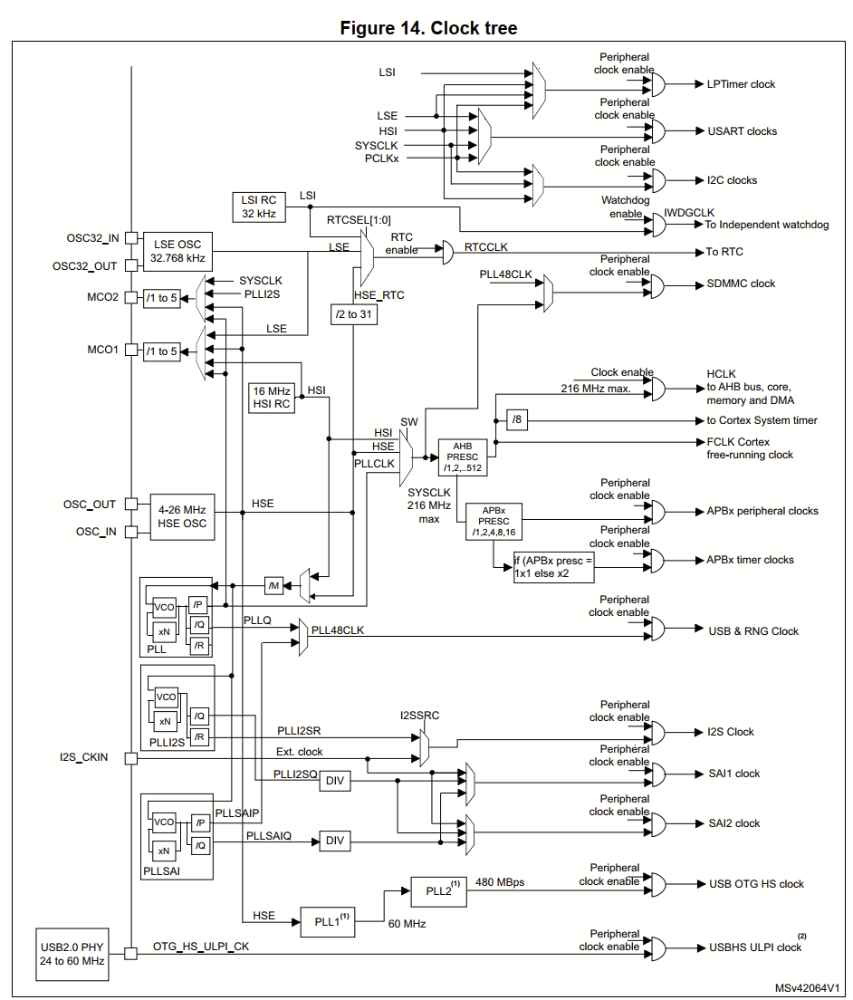
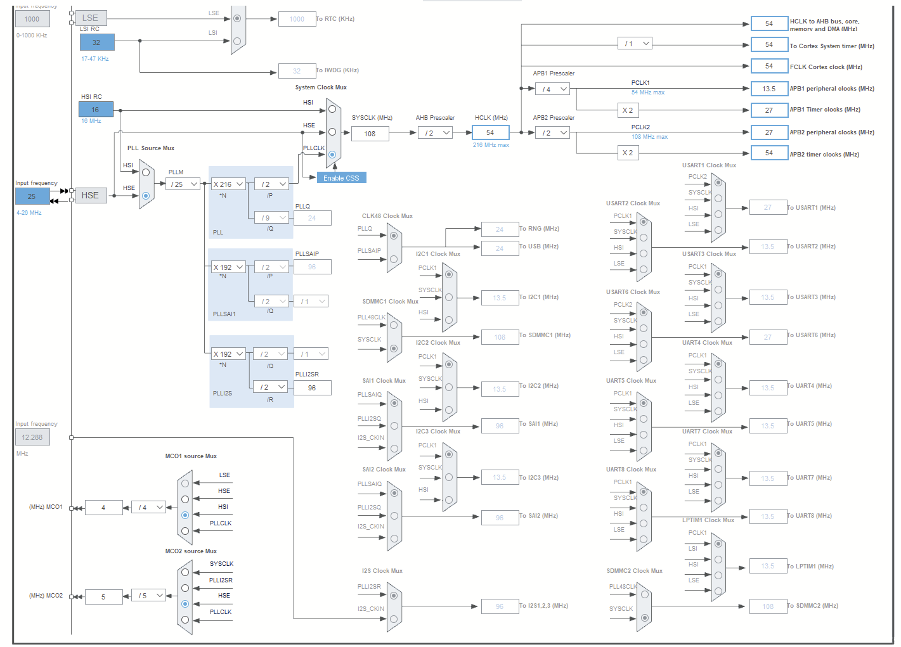
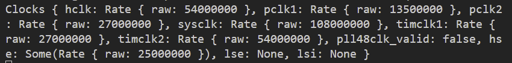
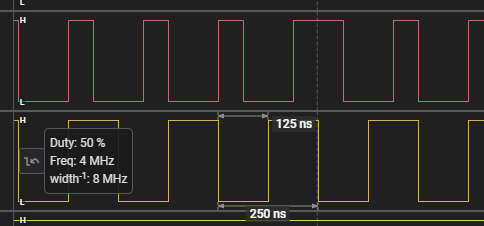
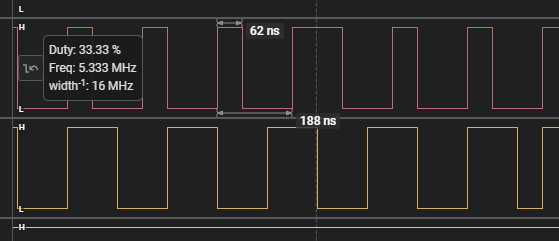
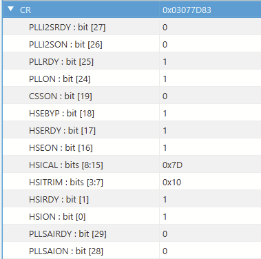
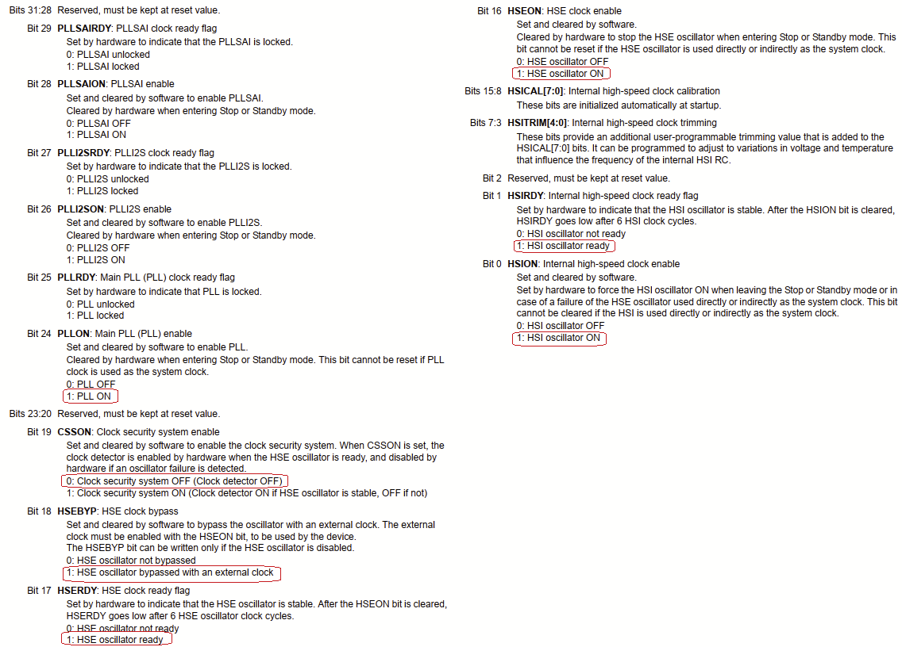
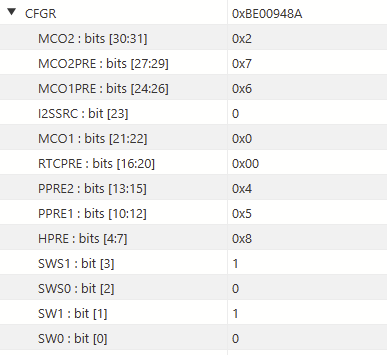
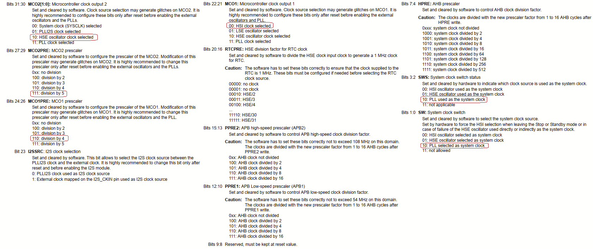

Содержание
- STM32 & Rust - Hello World по Embedded или мигаем светодиодом
- STM32 & Rust - RCC Система тактирования
Как известно, система тактирования в микроконтроллерах STM32 достаточно сложная и разветвленная. При использовании библиотеки HAL у нас нет такого удобного инструмента конфигурирования RCC как CubeMX. Но зато имеется удобный API самой библиотеки, куда удобнее оригинального HAL от ST.
Разбираться с RCC будем на примере отладочной платы 32F723EDISCOVERY и библиотеки stm32f7xx_hal.
В мануале RM0431 на странице 130 приведено описание системы тактирования.

В модуль RCC библиотеки HAL, имеется структура CFGR со следующими основными методами:
- hse - конфигурирование HSE генератора. Варианты режимов могут быть или HSEClockMode::Bypass в случае внешнего тактового генератора или HSEClockMode::Oscillator в случае кварчевого резонатора;
- hclk - установка частоты HCLK. Случится паника если задача частота выше 216МГц;
- sysclk - установка частоты SYSCLK. Случится паника если частота меньше 12.5МГц или выше 216МГц;
- pclk1 - установка частоты PCLK1, если частота не задана используется максимально поддерживаемая частоты. Случится паника если частота меньше 12.5МГц или выше 54МГц;
- pclk2- установка частоты PCLK2, если частота не задана используется максимально поддерживаемая частоты. Случится паника если частота меньше 12.5МГц или выше 108МГц;
- use_pll - включает PLL. Важно должна быть задача частота sysclk или использован метод use_pll48clk, иначе PLL не будет включён;
- pllm - установка делителя PLL. Случится паника если делитель меньше 2 и больше 63;
- plln - установка умножителя PLL. Случится паника если умножитель меньше 50 и больше 432;
- pllp - установка делителя PLL;
- pllq - установка делителя PLL для клоков на 48МГц. Случится паника если делитель меньше 2 и больше 15 (включительно);
- mco1 - установка источника для MCO1. Возможны варианты MCO1 {Hsi, Lse, Hse, Pll};
- mco1pre - установка делителя частоты для MCO1;
- mco2- установка источника для MCO2. Возможны варианты MCO2 {Sysclk, Plli2s, Hse, Pll};
- mco2pre- установка делителя частоты для MCO2;
- set_default - конфигурация клоков по умолчанию. Частота SYSCLK устанавливается в 216МГц;
- freeze - “заморозка” конфигурации, менять во время выполнения нельзя.
Ниже приведенный код конфигурирует систему тактирования как показано на диаграмме из CubeMX. 
#![no_std]
#![no_main]
use cortex_m_rt::entry;
use cortex_m_semihosting::hprintln;
#[allow(unused_imports)]
use panic_halt;
use stm32f7xx_hal::{
gpio::Speed,
pac,
prelude::*,
rcc::{HSEClock, HSEClockMode, MCO1, MCO2, MCOPRE},
};
#[entry]
fn main() -> ! {
let dp = pac::Peripherals::take().unwrap();
let rcc = dp.RCC.constrain();
let clocks = rcc
.cfgr
.hse(HSEClock::new(25.MHz(), HSEClockMode::Bypass))
.sysclk(108.MHz())
.hclk(54.MHz())
.pclk1(13500.kHz())
.pclk2(27.MHz())
.mco1(MCO1::Hsi)
.mco1pre(MCOPRE::Div4)
.mco2(MCO2::Hse)
.mco2pre(MCOPRE::Div5)
.freeze();
hprintln!("{:?}", clocks);
let gpioa = dp.GPIOA.split();
let gpioc = dp.GPIOC.split();
let _mco1 = gpioa.pa8.into_alternate::<0>().set_speed(Speed::VeryHigh);
let _mco2 = gpioc.pc9.into_alternate::<0>().set_speed(Speed::VeryHigh);
loop {}
}
Отладочный вывод показывает, что всё сконфигурировано как ожидается 
Подключение логического анализатора к пинам PA8 (MCO1) и PC9 (MCO2) показывает что-то странное. Частота PA8 соответствует ожиданиям в 4МГц, а частота PC9 5.333Мгц, вместо ожидаемых 5МГц и плавает (или 4МГц или 5.333МГц). 

Сейчас через STM32CubeProgrammer посмотрим конфигурацию RCC и сравним с RM0431. 



Конфигурация регистров соответствует тому исходному коду который приведен выше.